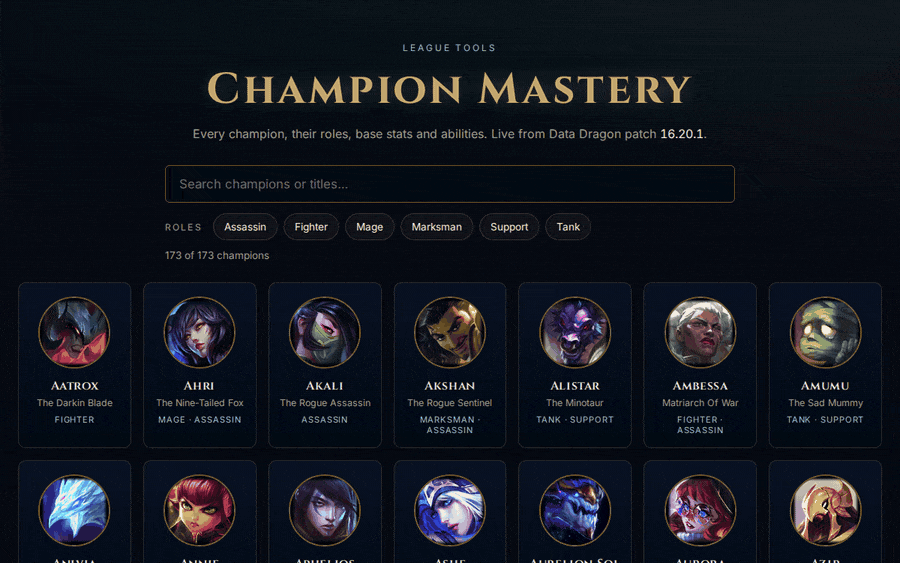
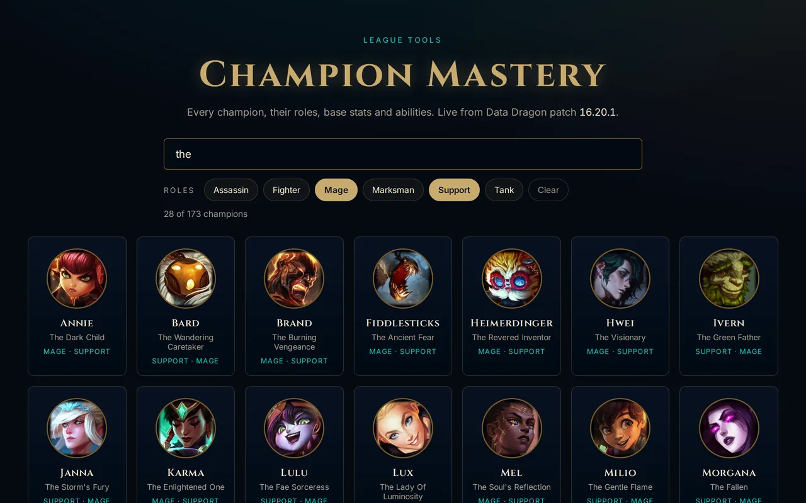
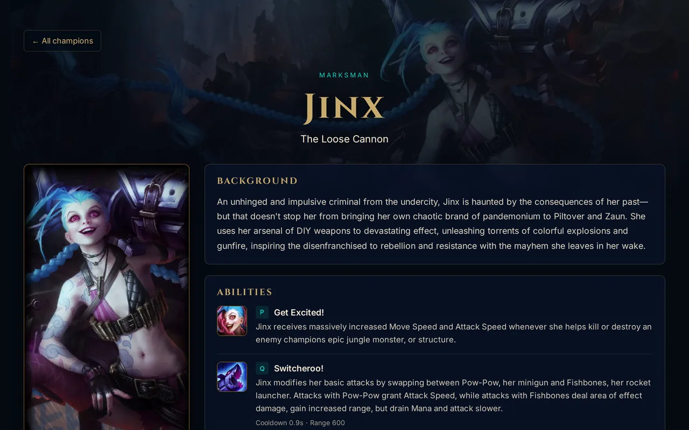
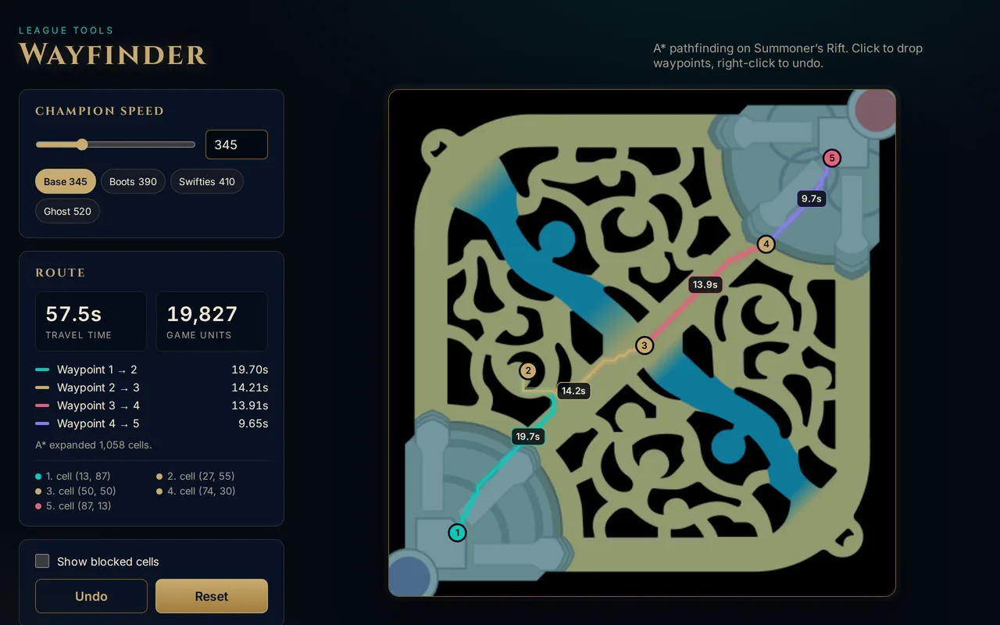
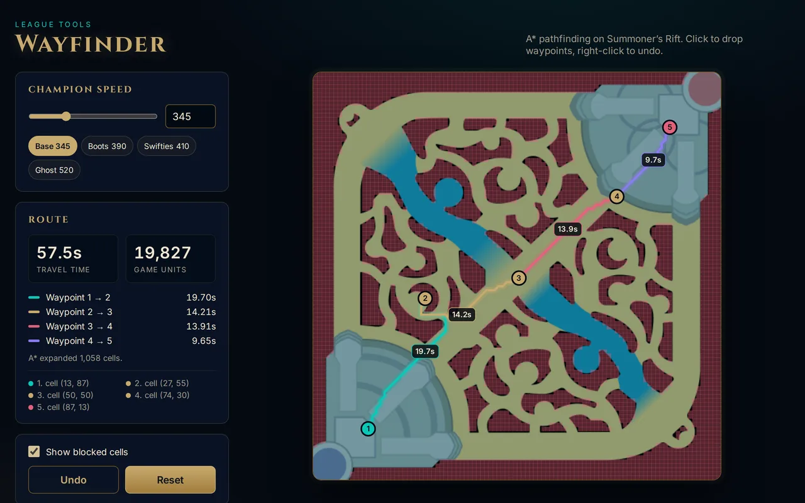
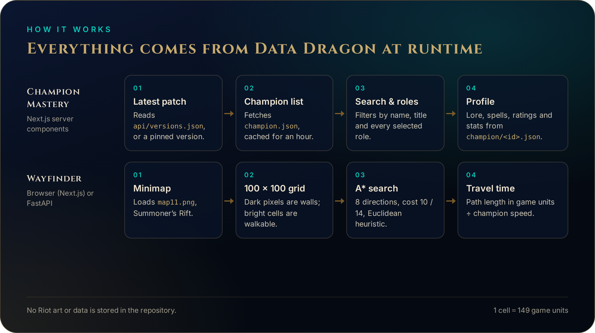

Search and stack roles
Search by name or title. Pick roles to narrow the list: Mage + Support gives you the enchanters, Fighter + Tank gives you the juggernauts.
- 173 champions at patch 16.20.1
- Roles combine, they don’t replace
- Live result count
Live data from Riot Data Dragon. No API key needed. MIT-licensed code.

The explorer reads Riot’s Data Dragon on page load, so new champions and balance changes appear without a code change.
Search by name or title. Pick roles to narrow the list: Mage + Support gives you the enchanters, Fighter + Tank gives you the juggernauts.

Lore, Riot’s attack, defense, magic and difficulty ratings, every ability with cooldown and range, and base stats with their growth per level.

Drop waypoints on Summoner’s Rift. A* finds the shortest walkable path between each pair and turns it into seconds for any movement speed.
Click to add, right-click to undo. Each segment gets its own colour and time, and the sidebar adds them up.

Show the 100 × 100 walkability grid over the map. It is built from the minimap’s pixels: near-black means wall.


Node.js 20+ for the web apps, Python 3.11+ for the API.
git clone https://github.com/enzihub/league-tools.git && cd league-tools # Champion Mastery → http://localhost:3000 cd champion-mastery && npm install && npm run dev # Wayfinder (web) → http://localhost:3001 cd ../wayfinder-web && npm install && npm run dev # Wayfinder API → http://127.0.0.1:8000/wayfinder cd ../wayfinder-api && python -m venv .venv && . .venv/bin/activate pip install -r requirements-dev.txt && python main.py